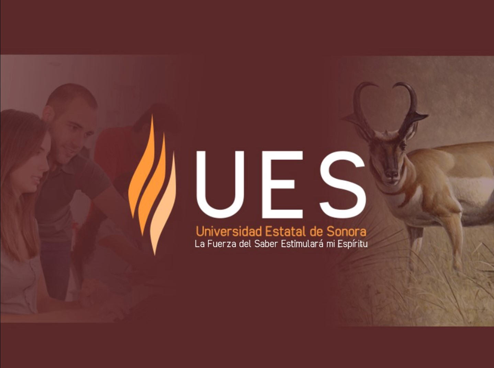

¡Hola, te doy la bienvenida al curso de Sistemas de Calidad! Me presento, mi nombre es Michaelene Huerta Dueñas y seré tu profesora de este curso. Te platicó un poco sobre mí, soy Doctora en Ciencias con área de conocimiento en estudios sociales sobre desarrollo y alimentación por el Centro de Investigación en Alimentación y Desarrollo, Maestra en Administración con área de conocimiento en calidad y creación de valor en las empresas por la Universidad Autónoma de Chihuahua e Ingeniera Industrial con especialidad en calidad y manufactura por el Instituto Tecnológico de Nogales. Asimismo, soy "Candidata a Investigadora" por el Sistema Nacional de Investigadores (SNI). Además, soy autora de artículos de divulgación científica enfocados al análisis de los sistemas de calidad y del libro Fundamentos del Emprendedor Tecnológico. He participado como ponente y conferencista en congresos internacionales y nacionales. Soy profesora de cátedras en el Tecnológico de Monterrey y profesor-investigador en la Universidad Estatal de Sonora.
A lo largo del semestre te estaré instruyendo y apoyando para que desarrolles diversas competencias relacionadas a la calidad, mismas que son necesarias y relevantes como futuro Licenciado en Administración de Empresas.
El objetivo de este curso es que apliques la gestión de la calidad en los procesos administrativos y de producción de una empresa, para mejorar los procedimientos, productos y servicios; dentro de las normas de calidad vigentes y estándares internacionales. Para el logro de ello, será necesario:
- Identifiques la importancia de la calidad y su aplicación en las organizaciones, cumpliendo con los principios y estándares de calidad mediante la utilización del diagrama Deming dentro del proceso de mejora continua con la finalidad de que apliques éstos en las empresas nacionales e internacionales con ética y responsabilidad.
- Apliques el proceso de planeación y organización dentro de la empresa, incluyendo sistemas de calidad y cumpliendo con el procedimiento de planificación de Juran, con el propósito de que las apliques éstos en las empresas nacionales e internaciones con orden y diligencia.
- Apliques las herramientas básicas de calidad e interpretes los resultados, cumpliendo con las normas de control estadístico de procesos y de acuerdo con la normativa de ISO pertinente y vigente, con el objetivo de que apliques éstos en las empresas nacionales e internacionales siguiendo las pautas de responsabilidad sustentable.